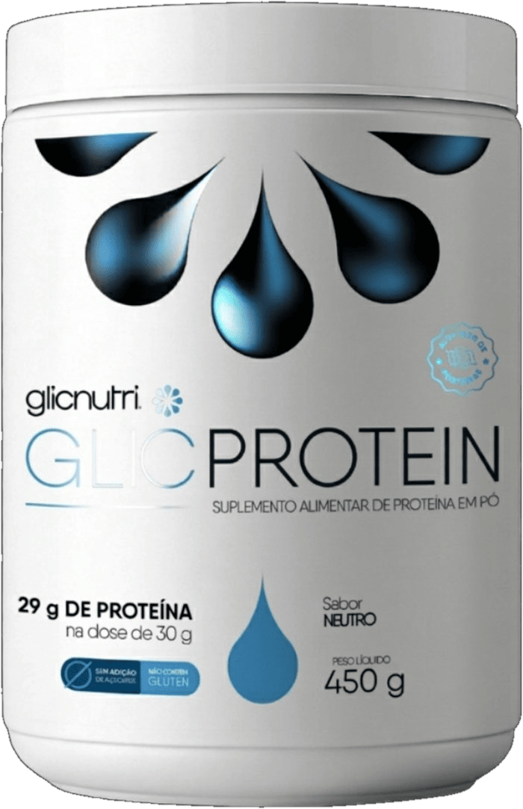

Mais saciedade
Ajuda a manter a sensação de satisfação por mais tempo entre as refeições, contribuindo para uma rotina alimentar mais equilibrada.

Criado por quem Vive Essa Realidade dentro de Casa.
Uma opção prática para complementar a alimentação com proteína de qualidade, sem adição de açúcar e com versatilidade para a rotina.
Ajuda a manter a sensação de satisfação por mais tempo entre as refeições, contribuindo para uma rotina alimentar mais equilibrada.
Desenvolvido para quem busca controlar melhor o consumo de açúcar e carboidratos, sem abrir mão de uma bebida nutritiva e saborosa.
Oferece nutrição de qualidade para apoiar mais disposição no dia a dia, sem depender de produtos com açúcar adicionado.
Pode ser misturado com água, leite ou usado em receitas, facilitando o consumo conforme a preferência e a rotina de cada pessoa.
Quando o Benício, meu filho, recebeu o diagnóstico de diabetes tipo 1 aos 3 anos, descobri que o mercado não tinha o que minha família precisava. Então decidi criar. — Lucas Resende, fundador da Glicnutri®
Veja a proposta do GlicProtein e entenda por que ele foi pensado para unir segurança, sabor e praticidade na rotina.
Cada ingrediente foi escolhido para entregar um benefício específico — e todos conversam entre si.
Tipo 1, tipo 2 e pré-diabéticos que querem uma proteína segura.
Lactose, glúten ou alergia ao whey — sem comprometer a nutrição.
Recuperação inteligente para quem precisa de digestão leve e nutrição completa.
Reposição proteica diária para manter força, mobilidade e autonomia.
Atletas e ativos que priorizam saúde metabólica junto com o resultado físico.
Famílias que escolhem o que entra na mesa com a mesma seriedade de uma prescrição.
Meu filho é diabético tipo 1. O GlicProtein virou parte da nossa rotina. É seguro, é gostoso e me dá uma paz de espírito que eu não conseguia com nenhum outro suplemento.
Sou diabético há anos e estava desistindo dos suplementos — todos batiam na minha glicemia. Esse foi o único que meu corpo aceitou bem. Hoje eu não fico sem.
Sou bariátrica e intolerante à lactose. O GlicProtein me ajuda na recuperação, é leve, não pesa no estômago e tem um sabor que me faz lembrar que comer bem pode ser prazer.
Respostas diretas para as perguntas que mais recebemos. Se a sua não estiver aqui, fale com a gente — atendemos pessoalmente.
Escolha o GlicProtein e sinta a diferença em poucas semanas. Performance, saúde e prazer no mesmo gole.
Quero o meu GlicProtein →